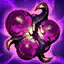
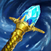
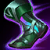
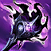

Brand — The Other Three Roles
Companion to the jungle guide · for send help#2366 · Patch 26.13 · July 2026
Labels: VERIFIED fact-checked multi-source · SINGLE SOURCE lolalytics only · REASONING derived · YOUR DATA your op.gg match history. Stats: lolalytics 26.13, Emerald+ unless marked. Kit numbers, combos, R rules, and item deep-dives live in the jungle guide — this one covers what changes per role.
YOUR DATA You've already played Brand in all five positions this season (6–2 overall). Here's what the data says each role is actually worth:
| Role | Win rate (E+ / Gold) | Share of Brand games | Verdict |
|---|---|---|---|
| Support | 51.9% / 51.5% | 46–57% | VERIFIED His home role. A-tier at Gold, six-figure sample. Where the ban rate comes from. |
| Bot (APC) | 53.8% / 53.6% | 19–31% | VERIFIED His highest win rate anywhere. A legit pocket pick that farms real ADCs. |
| Mid | 51.4% / 50.9% | 13–15% | VERIFIED Niche but not troll — positive WR, though below the Emerald+ champion average (above average only at Gold); punished by specific counters. |
| Jungle | 48.6% / 48.7% | 3–5% | VERIFIED The fun off-role. See the main guide. |
| Top | REASONING 5% of games, no reliable data at your elo — you went 1–2 there; treat it as filled-into, not a plan. | ||
YOUR DATA Your two Brand support games are quietly your best Brand games: a 10/8/20 MVP (op_score rank 1 in the lobby) with 25 wards and 2 pinks, and a 4/7/2 win with 21 wards and 4 pinks. You ward like a support and fight like Brand — that's the whole job description.
| Piece | Standard | Notes |
|---|---|---|
| Start | World Atlas + 2 pots | VERIFIED Quest gold from poking (your W/E hit champions = quest progress) → upgrades itself; at the final step pick Zaz'Zak's Realmspike (89.6% of Brands): your ability damage detonates a %-max-HP void explosion on a 10s cooldown — Blaze ticks proc it automatically. |
| Core |  Zaz'Zak's → Rylai's → Sorcs | VERIFIED 55.4% WR core (n≈17.5k). Rylai's second is the support signature — perma-slow peel for your ADC without needing gold for damage items. Liandry's 3rd (54.7%). |
| Summoners | Flash + Ignite | VERIFIED 71.5% pick — kill-lane default. Interesting: Exhaust+Flash posts the highest WR of the three (52.6%) — take it vs dive/assassin bot lanes and use it on the diver. |
| Skills | W → Q → E, max W>Q>E | VERIFIED Same as jungle. Poke pattern: W on the wave-edge where they'll step, E when they're close enough, Q only when they're burning (the stun threat is what makes them stand back). |
VERIFIED Matchups: you feast on engage tanks and mid-range mages — Mel (62.3%), Swain (60.8%), Alistar (54.2%). What actually beats you is enchanters who out-sustain your poke: Milio is the robust worst (48.3%, n=2,141), then Janna. Into those, stop trying to poke them out and play for level-6 all-ins with Ignite + detonation instead — their heals can't answer a 3-stack + Zaz'Zak's proc burst. REASONING Your Grievous rule from the jungle guide applies double here: vs Soraka/Milio/Yuumi, an early Oblivion Orb (800g) on a support income is the highest-value 800g on your team.
VERIFIED Brand replacing the ADC wins 53.8% at Emerald+ — his best number anywhere — because most ADCs simply lose lane to a mage: he outranges their damage window with W (900) and out-trades anything that steps up, and Cut Down is nearly always live vs full-HP marksmen. You went 1–1 in your two APC games; the champion's data says there's more there.
| Piece | Standard | Notes |
|---|---|---|
| Start & core | Doran's Ring →  Blackfire → Sorcs → Rylai's | VERIFIED Bot is where your Blackfire habit is correct: 77% first-item pick, 54.0% WR, and the top line (BFT→Sorcs→Rylai's) wins 55.4% on n≈12.8k. With a farm income you hit item spikes an ADC pays 30 more CS for. 4th: Shadowflame (57.8%). |
| Summoners | Flash + TP or Flash + Barrier | VERIFIED TP is most picked (47%), but Barrier is the standout: 55.4% WR on ~13k games — it flat-out cancels the "assassin jumps the immobile mage" script. At your elo, take Barrier. |
| Skills | W → E → Q, max W>Q>E | VERIFIED Bot takes E at level 2 (51% of games; W→Q→E at 40% wins the same — either is fine). The max order stays W>Q>E; only mid flips to E-max (below). |
VERIFIED Matchups: you beat conventional ADCs (at Gold: Varus 60.3%, Lucian 57.6%, and Kalista 59.6% on a thin n<300 sample) and Nilah/Ezreal/Smolder at Emerald+. What beats you is the mage-bot mirror — Seraphine is the robust worst (46.7%), with Lux behind her: they match your range and their utility outscales your damage. REASONING Duo note for flex nights: this is the role where your premades help most — a hook/engage support (the Blitzcrank you already play, or a tanky Naafiri support game) converts your E→Q stun into lane kills from level 2.
VERIFIED Mid Brand is 51.4% at Emerald+ on a small pick rate — positive, though below the ~51.8% champion average at that tier (he's above average at Gold), and one of your 5 mid games this season was a Brand mid win. Two things change from every other role:
VERIFIED Matchups: comfortable vs juggernaut-mids and skirmishers — Ryze (60.3%), Mel, Yone (55.2%). Two archetypes genuinely beat you: dive assassins (Fizz 42.9% is the worst, and his E dodges your whole combo) and longer artillery (at Gold: Xerath 40.6%, and — brace yourself — Naafiri mid 42.3%, so don't queue into your duo's champ). Into either: max-range W farming, Zhonya's second, and let your jungler know your lane can't be won alone.
| Situation | Play |
|---|---|
| Flex night, Jasio on Nunu jungle | REASONING Support (his home role; you've been MVP there) or bot APC with an engage support. Jungle's taken anyway. |
| Flex night, no Jasio | REASONING Jungle if you want the project (main guide), support if you want the win. |
| Solo queue, climbing | VERIFIED Bot APC or support — his two best win rates, and both scale off what you already do well (fighting, warding). |
| Enemy locks Milio/Seraphine bot | REASONING That's the counter to support/APC Brand respectively — swap targets: play the other bot-side role, or mid. |